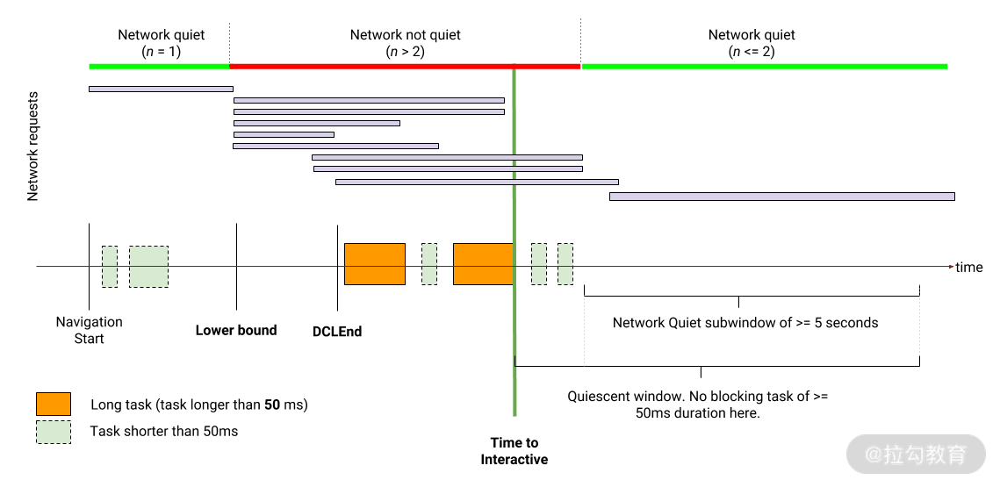
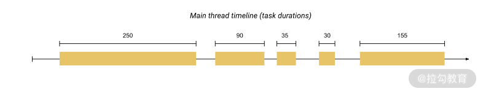

要点：
性能是前端领域关注度非常高的话题，因为页面性能的好坏会直接影响用户体验。为了不断提升用户体验，前端工程师往往会对页面性能不断改进，而这个改进的过程就叫性能优化。这一讲我们就详细探究性能优化相关的内容。
一、性能指标
什么是性能？性能是指程序的运行速度，而前端性能是指页面的响应速度，提到速度必然离不开一个变量，那就是时间。所以我们会看到性能指标都是以时间为单位来测量的。
前端性能的指标有很多，本讲从是否可以通过浏览器采集上报，是否由权威组织或大型公司提出，以及是否严重影响用户体验这 3 个方面考虑，选取了下面一些重要的指标。
首屏绘制（First Paint，FP）
首屏绘制由 W3C 标准 Paint Timing 中提出。
首屏绘制时间是指从开始加载到浏览器首次绘制像素到屏幕上的时间，也就是页面在屏幕上首次发生视觉变化的时间。注意首屏绘制不包括默认的背景绘制，但包括非默认的背景绘制。由于首次绘制之前网页呈现默认背景白色，所以也俗称“白屏时间”。
获取到这个指标值也非常简单，在 HTML5 下可以通过 performance API 来获取，具体代码如下：
1 | performance.getEntriesByType('paint')[0] |
这里通过 performance.getEntriesByType() 函数返回了一个 PerformanceEntry 实例组成的数组，其中，duration 为该事件的耗时，entryType 为性能指标实例的类型，name 为指标名称，startTime 为指标采集时间。
首屏内容绘制（First Contentful Paint，FCP）
首屏内容绘制由 W3C 标准 Paint Timing 中提出。浏览器首次绘制来自 DOM 的内容时间，这个内容可以是文字、图片（也包括背景图片）、非空白的 canvas 和 svg。
由于是 W3C 标准提出的，所以 Performance API 也提供了这个指标值，具体代码如下：
1 | performance.getEntriesByType('paint')[1] |
和获取 FP 值的唯一区别就在于通过 performance.getEntriesByType() 函数获取到 PerformanceEntry 实例数组的下标值不一样，FP 为第 1 个元素，FCP 为第 2 个元素。
FCP 有时候会和 FP 时间相同，也可能晚于 FP。这也很好理解，FP 只需要满足“开始绘制”这一个条件就可以了，而 FCP 还要满足第二个条件，那就是“绘制的像素有内容”。
可交互时间（Time to Interactive，TTI）
可交互时间由 Web 孵化器社区组（WICG）提出，是指网页在视觉上都已渲染出了，浏览器可以响应用户的操作了。虽然理解起来比较简单，但实际测量起来要考虑两个条件：第一个条件是主线程的长任务（长任务是指耗时超过 50 ms）执行完成后，第二个条件是随后网络静默时间达到 5 秒，这里的静默时间是指请求数不超过 2 个， 排除失败的资源请求和未使用 GET 方法进行的网络请求。
具体参考下面这张图片。

TTI 示意图
从上图可以看出，主线程第二个橙色部分的长任务执行完成后，主线程执行了两个任务之后发起了一个新的网络请求，但此时仍处于静默状态。所以 TTI 就是第二个长任务结束后的时间。
TTI 测量可以使用 Google 提供的模块 tti-polyfill，示例代码如下：
1 | import ttiPolyfill from 'tti-polyfill'; |
通过调用模块提供的 getFirstConsistentlyInteractive() 函数即可返回一个 Promise 对象，如果当前浏览器支持相关测量方法，则返回 TTI 值，否则返回 null。
总阻塞时间（Total Blocking Time，TBT）
总阻塞时间由 W3C 标准 Long Tasks API 1 提出，是指阻塞用户响应（比如键盘输入、鼠标点击）的所有时间。指标值是将 FCP 之后一直到 TTI 这段时间内的阻塞部分时间总和，阻塞部分是指长任务执行时间减去 50 毫秒。下面是一张来自 web.dev 的示意图。

上图是主线程执行的时间轴，有 5 个任务，其中 3 个是长任务，因为它们的持续时间超过 50 毫秒。将这 3 个长任务分别减去 50 毫秒之后求和，得到 TBT 值为 345 毫秒。获取长任务耗时的方式如下：
1 | var observer = new PerformanceObserver(function (list) { |
首先通过 PerformanceObserver 函数构造一个性能监测实例，通过回调函数参数的 getEntries() 函数来获取 PerformanceEntry 实例数组，每个实例对应一个长任务。同时要指定监测实例的实体类型为“longtask”。
最大内容绘制（Largest Contentful Paint，LCP)
最大内容绘画指的是视口内可见的最大图像或文本块的绘制时间。测量这个指标的值和 TBT 相似，不同的是将实体类型改为“largest-contentful-paint”。
下面是对应的监测代码：
1 | var observer = new PerformanceObserver(function (list) { |
二、统计方式
虽然我们可以通过一些方式来精确地采集性能指标，但不同的用户、不同的环境采集同一指标值会有所差异。所以通常需要对大量采集的性能指标数据进行统计才能用来量化。
平均值统计
平均值统计应该是大家最容易想到的统计方法，将所有用户产生的性能指标值收集起来，然后对这些数据取平均值，最终得到平均耗时数据。这种统计方式最大的问题就是容易受极值影响，比如新闻里面说的腾讯员工月薪 8 万，这显然是不现实的，这就是被平均的结果。
百分位数统计
百分位数统计可以解决极值问题。百分位数是对应于百分位的实际数值，比如第 70 百分位数：将数据从小到大排列，处于第 70% 的数据称为 70 分位数，表示 70% 的性能数据均小于等于该值，那剩下的 30% 的数据均大于等于该值了。
百分位数的好处在于，对于性能需求不同的页面或应用，可以设置不同的百分位数。对性能要求越高，使用越大的百分位数。
比如在追求极致性能的情况下，要求 99% 的用户都要小于 3 秒，我们看页面加载时长时候就应该看 99 分位数。而某些重要程度比较低的页面，可以只要求 50% 的用户页面加载时长小于 3 秒，那么对应的就是 50 分位数，也称中位数。
三、优化思路
有了性能指标和统计方式之后，就可以正式开始针对不同的指标值进行优化了。前端性能优化一般可以从两个方向入手：加载性能优化和渲染性能优化。
虽然不同方向的优化手段不同，但大体上都遵循两个思路：做减法和做除法。做减法是直接减少耗时操作或资源体积，做除法是在耗时操作和资源体积无法减少的情况下，对其进行拆分处理或者对不可拆分的内容进行顺序调换。
下面来进行举例分析。加载性能的优化手段中，做减法的有：
- 采用 gzip 压缩，典型的减少资源的传输体积；
- 使用缓存，强制缓存可以减少浏览器请求次数，而协商缓存可以减少传输体积；
- 使用雪碧图，减少浏览器请求次数。
做除法的有：
- HTTP2 多路复用，把多个请求拆分成二进制帧，并发传输；
- 懒加载，将 Web 应用拆分成不同的模块或文件，按需加载；
- 把 script 标签放到 body 底部，通过调整顺序来控制渲染时间。
而在渲染性能优化的手段中，做减法的有：
- 避免重排与重绘，减少渲染引擎的绘制；
- 防抖操作，减少函数调用或请求次数；
- 减少 DOM 操作，减少渲染引擎和脚本引擎的切换，同时也减少渲染引擎绘制。
做除法的有：
- 骨架屏，将页面内容进行拆分，调整不同部分的显示顺序；
- 使用 Web Worker，将一些长任务拆分出来，放到 Web Worker 中执行；
- React Fiber，将同步视图的任务进行拆分，可调换顺序，可暂停。
前端性能优化的方式还有很多，我们学习的重点不在于将这些优化方式一一记住，而是掌握优化的思路，在不同的方向上，对不同步骤优先考虑做减法，然后再考虑做除法。
四、总结
前端性能优化实际上包括两个步骤，即量化和优化。在量化过程中，先采集特定的指标，本课时提到了 5 个比较重要的指标，包括首屏绘制、首屏内容绘制、可交互时间、总阻塞时间、最大内容绘制；然后对不同用户产生的指标值进行统计，这里推荐使用百分位数统计法，对于不同性能需求的页面设置不同的百分位数。
在优化过程中，要根据性能指标统计结果进行优化，可通过做减法和做除法的思路分别对加载性能和渲染性能进行优化。
Tips: Please indicate the source and original author when reprinting or quoting this article.